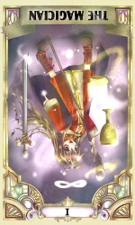

ヤオヨロヅ物語
|

|
第四話 〜Ｒ‐１ｓｔ：４月の魔法〜
作：天爛
絵：ムクゲさん（ URL）
Ⅰ：魔術師（The Magician）
| 正位置： | 物事の始まり・新鮮さ・創造性・器用さ・自信を持って行動・人気がある |
| 逆位置： | 嘘つき・技術不足・過去にこだわる・消極的・迷う・気まぐれ・マンネリ化 |
|
その日の放課後も、僕達ふしけんメンバーは部室に集まっていた。
集まっているとは言っても特にすることなく、みんな個々で好き勝手やっている。
光輝はどこから取り出したのが木刀で素振りをしているし、爛さんはぽかぽか陽気に誘われてお昼寝中だ。
その寝顔は外見と合さって、とても可愛らしい。と言ったら絶対に怒られるけど。
で、かくいう僕は本館さんから借りた本を読んでいたりする。まあ、それもついさっき読み終わってしまい現在を以って手持ち無沙汰な状態。
なんとなしに爛さんの寝顔を見ていると、なんかいたずらをしたいと言う誘惑に駆られた。けど、後でどんな仕返しをされるのか考えるだけで億劫だからどうにか耐え……やっぱムリ。
果たして隠れ可愛い物好きの僕がこの誘惑に絶えられるだろうか。否、耐えられる筈がない。まあ。かと言って、爛さんの仕返しが恐ろしいというのも確か。
つまりはある意味この状況は拷問以上の何かである事は疑いようがないわけで。どうにか気を紛らわせられるものはないかと室内を見渡す。そして光輝に目が止まった。
そうか光輝に話し相手になって貰えばいいんだ。そう思いつき早速声をかけた。
「なんや？」
光輝は素振りを止め、手にしていた木刀を仕舞うと僕の方に顔を向けた。
「いや、特にこれと言って用があるわけじゃないんだけど、本を読みきっちゃったからヒマで。よかったら話し相手になってくれないかなぁって。」
誘惑に負けそうだからとは言えない。
「なんや、そんなことか。ん、まあ、別にいいで」
そう言って光輝は近くの椅子に腰を下ろした。
「で、何の話や？」
光輝に聞かれ、時にないとも言えず少し焦る。
「えと、そ、そういえば爛さんってなんで可愛 —— じゃなくて、なんで小さいままなの？ 爛さんなら魔法でどうとでも出来ると思うんだけど。」
「あぁ、それな。それは爛ねえやんから直接聞くのが筋やろうけど……」
そこまで言って、光輝はちらっと爛さんの方に視線を向けた。
「まあ、爛ねえやんは来年の春までは口を割らんやろうし、わいが言っても問題ないやろ」
そう言って、僕の方に向き直り、真剣な目で語り始めた。
「これは６年前の春に、爛ねえやんから聞いた話やけどな……」
２年前（要するに今から８年前やな）、天国の分家である天津家には豪と華絢（かあや）と言う兄妹がいた。
豪と華絢は１５歳と６歳という歳の離れた兄妹だったが、その分普通の兄妹より仲が良かったらしい。
兄妹は魔道の才能に恵まれ、特に豪はその若さにして既に下手な上級魔術師を超えるとまで言われていた。
魔術低迷の時代、日本という遠く離れた辺境の地で、自分達の歴史的優位を脅かし兼ねない存在が現われたのだから、魔術発祥の地と公言していた西洋の魔術結社が心良く思わなかった事は言うまでもない。
そんなある日、天津一家は西洋の魔術結社が催すパーティに誘われた。
表向きは親睦を深める為ではあるが、なんらかの陰謀が動いているのは明らかだ。
だが当時の日本において西洋の魔術結社との最大の窓口だった天津家が無碍に断る訳にいかず、受験生である豪を残して、両親と華絢のみで参席する手筈となった。
今思うと、子供達の一方に何かあっても、もう一方は助かるようにと言う両親の策だったのかもしれない。
華絢は豪とお別れしたくないと駄々を捏ねたが、当の豪に「僕は大丈夫だから」を説得されて、結局両親と共に行く事になった。
そして両親と華絢の乗った飛行機が事故に遭い、３人とも帰らぬ人となってしまった。
腕の立つ魔術師が数人乗っていての大惨事なのだから、魔術を封印する何らかの仕掛けが施されていた上の意図的な事故としか考えようがない。しかし飛行機は全焼してしまい生存者もいない。その為に証拠は何ひとつ残らず、それを証明するには至らなかった。
その夜、華絢が死んだ事を知った豪は、パーティーに行くように勧めた自身を恨んだ。
そして日が経つにつれ禁術である《転生の儀》をもって華絢を蘇らせようと思うまでになった。
転生の儀。それは死んで間もない魂を当人の体で蘇らせる蘇生術と異なり、全く新しい体で蘇らせるという術。それがその神の教えに背く行為であるが故に禁術とされていた。
が、豪はその《転生の儀》を使おうと決意した。
事故から時間が経っていた事もあったが、華絢の体も飛行機と共に灰と化してしまった為、生き返らせるには新たな体を与えるしかなかった事もある。
術式はホムンクルス生成や現在のクローン技術とほぼ同じ。男女それぞれの情報が十分に詰まった生命の元を混合し培養する。
もちろん件の飛行機事故で両親も死んでいたから、それを入手する術はない。
しかし、そこは魔術である。ある程度の融通はきく。ただ、魂を定着させるにはなるべく本来の物に似た性質を持たせた方がいいのも疑いようがない真実である。
だから、両親以外の物を使うわけには行かず、結局どうにか手に入れた両親の髪の毛を代用品として使った。
考えるまでもなく代用品では成功率が極端に低くなる事は明白だ。だが、失敗は許されない。ならばどうやって成功率を上げるか。
簡単だ。女になれば良い。女になれば命を生み出すのは女性という自然の摂理との類似性が伴って成功率が格段に上がる。
普通、男として生きた１５年を捨てて女になろうとするのだから躊躇ぐらいはするだろう。しかし豪にはそれがなかった。
別に女としての人生にあこがれていた訳ではない。
ただ一心に、そうただ一心に、華絢に会いたい。そう願って止まなかっただけだ。
もし男に戻れなくとも、それが華絢を蘇らせるためであるならば、甘んじて受け入れよう。それが禁術を行使してまで華絢を生き返らせようとしている自身への罰だから。そう覚悟していた。
そうして華絢の新たな体の元が出来た。あとは華絢の魂を宿らせれば《転生の儀》は完了する。そして生まれ変わったて華絢が成長するのを待つだけ。
が、豪にはそれを待つ余裕がなかった。成長する前に禁忌の産物として殺されてしまうかも知れない。いや、それならば今度こそ守りきる。
だが、周囲からは守れても成長するにつれて記憶が希薄になって行き、喋れるようになった時には何も覚えてないかも知れない。
それは豪には防ぎようがなく、なんとしても避けたいことであった。
だから、もう一つの禁術《時の譲渡（クロック・ギフト）》に頼った。
万物は『時』の影響を等しく受ける。そこに例外はなく、ある物質だけ時を進めたり、また逆に戻したりする事は不可能。それがこの世界の常識であり摂理である。
その摂理の抜け道をついたのが《時の譲渡（クロック・ギフト）》だ。
例えば全体が１０で物質Ａを５増やしたいとする。その５はどこにもないのだから持って来る事が出来ない。だが、物質Ａを５増やすと同時に物質Ｂから５減らせばプラスマイナス０であり全体は１０のまま、物質Ａを増やす事が出来る。
まあ言葉で説明するのは簡単だ。しかしそれを実現させれるかは話が別である。
まず、常識が邪魔をする。１つの物質の時を操作する事さえ出来ないのに別々の２つの物質の時を動かすことが出来るはずないと。
次に、技術が邪魔をする。１つの物質に対してさえやった事のない時間操作を、２つの物質に全く同タイミングで真逆の方向に操作するのだから並大抵の技術力では制御出来る筈がない。
最後に伝承が邪魔をする。伝承によれば何人か《時の譲渡（クロック・ギフト）》を発動させた人物がいる。だが大半は制御に失敗し生誕以前にまで若返ってしまったという。また制御に失敗した者でも乱用により変質した体に魂がついて行かなくなり魔物と化すなどまともな人生を送れた者はいないと言われている。そう好奇心半分で試すにはリスクは大きすぎるのだ。
だが、豪は《時の譲渡（クロック・ギフト）》の術式を自身の法（理論）を以って魔法《巡りめく時の流れ（タイム・ラップ）》へと昇華させた。
ここで、魔術と魔法の違いについて説明しておいた方が良いのかも知れない。
魔術とは簡略化された魔法である。魔道（魔術と魔法を合わせてそう呼ぶ）が使えると言う認識が必要なのは言うまでもないが、後は術式を知り、それを操るだけの技術と魔力さえあれば誰でも使える。それが魔術だ。
対する魔法は基本的に編み出した本人しか使えない。それは自身の法（理論）を元に術式を構築しているから。その法（理論）がこじ付けであっても正しいと信じればなんでも出来る反面、少しでも疑問を持てばそれは成功しない。どんな強力な魔法でもだ。法（理論）が脆弱ならば言葉１つで無力化されてしまうという弱点を持つ。
ともかく豪はその昇華させた魔法《巡りめく時の流れ（タイム・ラップ）》を行使した。
だが結果は失敗。理論は間違っていない。制御に失敗したのだ。
華絢の身体を６歳まで成長させるのには成功した。が、そこで気が緩んてしまったため、術の制御を放れ暴走し始めた。
結果、豪の『時』だけが流出し、何とか制御を取り戻し術を終了させた時には７歳の、しかも『時』の恩恵を受けられない（正確には１日１回１日分の『時』が流出する）身体となっていた。
ゆっさゆっさ。豪の身体が揺すられた。
どうやら術を終了させた後で気を失っていたらしい。
はは、気を失うのがもう少し早かったら消滅していたな。豪はそう心の中で嘯く。
目を開くとそこに華絢に良く似た少女がいた。とても良く似ていた。生前の華絢と瓜二つだった。眼も鼻も口も耳も目に映る全てが華絢だった。
自然と目に涙が溜まる。豪はその涙を目の前の少女から隠すように抱きついた。
少女もいきなり抱きつかれ目を丸くするが、その雰囲気から何かを感じたのかすぐに申し訳なさそうな顔になった。
そう、少女の身体の内にある魂は華絢の物でなかった。
……ごめんなさい。
それまで信じていなかった『神様』と言う奴は
涙が出るほどに、どこまでもどこまでも限りなく
そう、あまりにもあまりにも ———— 残酷だった。
……ごめんなさい。
どちらが言ったかわからない。どちらもが言ったのかもしれない。どちらも言ってないのかもしれない。だがしかし、その言葉は確かに聞こえた。二人の心へと確かに。
「ごめん。いきなり抱きついたりして」
しばらくして豪は華絢の姿をした少女を抱くのを止めて謝った。
「ううん。気にしないで。おねえちゃん」
少女は優しく微笑む。
豪はどきりとする。その笑顔はまさしく華絢のそれだったから。
だが豪は気付いていた。少女の身体の中にある魂が華絢の物でない事に。
暴走を止めるまで確かにあった華絢の魂は、目が覚めた時にはどこにもなかった。
「名前は？」
少女の中の魂に問う。少なくとも華絢より年上の男の子だと言う事は判る。
少女の肩がピクリと震える。そして数度躊躇してから意を決して口を開いた。
「えっ？ おねえちゃん。あたしの名前わすれちゃったの？」
口調こそ疑問系だが、その瞳には決意の色が浮かんでいた。
その瞳をみて豪も彼、いや彼女が妹として生きる事を心に誓った事を知った。
だから彼女がそう望むなら、そうである事を認めようと思った。
「そんなことないよ。か……舞（まい）が寝惚けてないか確かめただけ」
でも華絢とは呼べなかった。呼べば二度と本物の華絢に会えなくなる気がして。
少女を妹と認めても、華絢とは認められない自分が少し嫌になる。
「よかった」
舞は安心したのか再度微笑む。その笑顔に救われた。
でも、その仕草があまりにも華絢に似ていたので確かめずにはいられなかった。
「ホントに、か……」
華絢じゃないの？と聞きそうになって思い留まる。
そして行き場をなくした言葉の続きは、不思議そうに見つめている少女への最終確認となった。
「ホントに舞なのね？」
「うん♪」
元気良く返された返事に躊躇の色は見つからなかった。
「で、術を使う為に女の子になった豪は、その後『爛』と名乗るようになり今に至るというわけや」
「へぇ〜、そんなことがあったんだ」
「まあ、爛ねえに聞いてから６年も経っているから、細かいとこはちゃうかもせえへんけどな」
「大丈夫。だいだいあってたから」
不意に声がしたから驚いたけど、いつの間にか爛さんが目を覚ましていた。
「あっ……」
勝手に爛さんの昔話を聞いてたんだからなんだか居心地が悪い。
「気にしなくていいわよ。どうせヤオ達にはいつかはなそうとは思ってたし」
そう言われても……
「それより、光輝？ それ言ったのいつだったかちゃんと覚えてる？」
「えと、確か６年前の春、４月１日やったと思うけど……」
えっ……、４月の１日？ と、言う事は……もしかして？
「覚えているなら問題ないわ。そういう事だから、ヤオ。あたしはもう少し寝るから起さないでね？」
それだけ言い残して、再び机に伏せた。途端にすぅすぅと心地よい寝息が。
「寝るの早っ」
爛さんを起さないよう声を潜めて話す。
「昨日遅くまでなんかやってたみたいやで」
返す光輝の声も小さかった。
「そうなんだ。でも、さっきの話。４月１日って嘘だったんじゃ？」
「その時の爛ねえやんも嘘やって言ってた。けど、わいには全部が全部嘘やと思えへんかったわ」
「ん〜、そう言われればだね」
嘘にしてはあまりにも凝り過ぎだよね。
「まあ、ねえやんの≪認知阻害系相違否定呪文（パラドクス・ノウト）≫が効いてる以上、真実か否か調べようがないんやけどな。でも、これだけは確かや」
「な、なに？」
「爛ねえやんは、どこかに行った誰かの魂を今も探してるって言うのは間違いないで」
《後書きと言うかなんちゅうか》
作中でもある通り、エイブリルフールのネタです。
と言う事で今回光輝が語った爛の過去には嘘が含まれてます。
どれ位が嘘が混じってるのか今現在の天爛にもわからないぐらい混ざってます（爆
ひとつ言える事は『魂を定着させるにはなるべく本来の物に似た性質を持たせた方がいい』は嘘。
唯一『性別』だけは逆転させた方が成功率上がります。なぜかって？
だって転生≒転性ですもん（バグ